Cálculo Numérico¶
Aunque el paquete Numpy ofrece ciertas funcionalidades matemáticas además de la manipulación básica de arrays, como el paquete linalg para álgebra lineal y random para números aleatorios, en Scipy encontraremos todas las herramientas matemáticas que podamos necesitar. Scipy es una colección de paquetes de algoritmos y herramientas matemáticas para distintas tareas, que también utiliza Numpy. Scipy posee varios subpaquetes que deben importarse independientemente cuando se vayan a utilizar; éstos son algunos de ellos:
| Subpaquete | Descripción |
|---|---|
| odr | Regresión de distancias ortogonales (ODR) |
| misc | Funciones varias (lectura de imagenes, factorial, etc.) |
| fftpack | Algoritmos para transformada de Fourier discreta |
| io | Entrada y salida de datos |
| stats | Funciones estadisticas |
| lib | Envoltorios (wrappers) de Python a librerías externas |
| integrate | Integración numérica |
| ndimage | Imagenes n-dimensionales |
| linalg | Álgebra lineal |
| interpolate | Herramientas de interpolación |
| optimize | Herramientas de optimización |
| signal | Tratamiento de señales |
Para ver la lista completa de subpaquetes consultar la ayuda de scipy como help(scipy)() (haciendo antes import scipy para tener todos los nombres asociados a scipy) y consultar su página web para ver la documentación completa (Link www.scipy.org). Una manera práctica de trabajar es importar el espacio de nombres de scipy, es decir el nombre de sus paquetes y funciones principales y luego importar el o los paquetes que vaya a usar, como en este ejemplo:
>>> from scipy import * # importa el nombre de los subpaquetes únicamente
>>> import optimize, stats # importa los paquete optimize y stats
Integración numérica¶
El subpaquete integrate ofrece varias herramientas de integración numérica con distintos métodos. Podemos ver todos los disponibles consultando su ayuda:
>>> from scipy import *
>>> help(integrate)
Integration routines
====================
Methods for Integrating Functions given function object.
quad -- General purpose integration.
dblquad -- General purpose double integration.
tplquad -- General purpose triple integration.
fixed_quad -- Integrate func(x) using Gaussian quadrature of order n.
quadrature -- Integrate with given tolerance using Gaussian quadrature.
romberg -- Integrate func using Romberg integration.
Methods for Integrating Functions given fixed samples.
trapz -- Use trapezoidal rule to compute integral from samples.
cumtrapz -- Use trapezoidal rule to cumulatively compute integral.
simps -- Use Simpson's rule to compute integral from samples.
romb -- Use Romberg Integration to compute integral from
(2**k + 1) evenly-spaced samples.
See the special module's orthogonal polynomials (special) for Gaussian
quadrature roots and weights for other weighting factors and regions.
Interface to numerical integrators of ODE systems.
odeint -- General integration of ordinary differential equations.
ode -- Integrate ODE using VODE and ZVODE routines.
Existen por ejemplo implementaciones del método del trapecio o el método de Simpsom, ambos métodos simples basados en muestras fijas. Las funciones trapz() y simps(), que emplean dichos métodos para al cálculo numérico de integrales, adminten como entrada un array y de valores a integrar y otro array con la variable independiente x; si no se incluye un segundo parámetro, el espaciado entre los elementos de y de 1 por defecto, aunque este valor se puede asignar con el parámetro opcional dx=1.
Supongamos que queremos integrar numéricamente la función 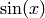 de 0 a 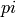, cuyo valor exacto es 2. Veamos cómo se puede calcular numéricamente con distinto número de muestras:
>>> from scipy import integrate
>>> # Generamos 5 muestras de la función seno, de 0 a pi
>>> x = linspace(0, pi, 5)
>>> y = sin(x)
>>> # Integramos el array por el método del trapecio
>>> integrate.trapz(y,x)
>>> 1.8961188979370398
>>> # Si aunmentamos el número de muestras,
>>> # la intragración se acerca más al valor analítico
>>> # Generamos 20 muestras de la función seno, de 0 a pi
>>> x = linspace(0, pi, 20)
>>> y = sin(x)
>>> # Integramos el array por el método del trapecio
>>> integrate.trapz(y,x)
>>> 1.9954413183201947
>>> # Integramos por el método de Simpson
>>> integrate.simps(y,x)
>>> 1.999977188106568
Como se ve, el método de Simpson da un valor más cercano al verdadero, que del trapecio, ya que el primero emplea polinomios de grado 2 para la integración.
En la prática, la función de uso general más eficiente es quad(func, a, b)(), que integra por cuadratura de Clenshaw-Curtis [1] una función de Python func() entre a y b. Consideremos como ejemplo el cálculo del área una semicircunferencia de radio unidad calculando la integral bajo la curva. Para ello definimos una función de circunferencia e integramos entre -1 y 1:
| [1] | Para detalles, ver por ejemplo http://en.wikipedia.org/wiki/Clenshaw-Curtis_quadrature |
La función quad() devuelve por defecto el valor de la integral, que en este caso vale 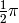 y una estimación del error en el proceso de integración numérica. Los límites de integración pueden ser 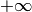 o 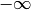 usando los símbolos +Inf o -Inf:
def func1(x):
return 2.0*exp(-x**2/5.)
int1, err1 = integrate.quad(func1, -2, +2) # integración entre -2 y +2
int2, err2 = integrate.quad(func1, -Inf, +Inf) # integración entre -infinito y +infinito
print(int1, int2)
(6.294530963693763, 7.9266545952120211)

Es posible incluir varios parámetros a la función empleando el parámetro opcional args como una tupla de parámetros (ver la ayuda de quad():
# Definimos la función a integrar, incluyendo parámetros
def f2(x,a,b):
return a+ b*sin(x)
# Definimos unos parámetros de entrada
p=0.2;q=1
# Integramos numéricamente, incluyendo parámetros
integrate.quad(f2, 0, pi, args=(p,q))
(2.6283185307179586, 2.9180197488520396e-14)
Se pueden calcular integrales dobles empleando de manera similar dblquad(), aunque los límites de la segunda integral se deben poner como funciones de Python.:
# Función a integrar
def f1(x,y):
return x+y
# Límites de la primera integral
a, b = 0, 2
# Definición de limites de segunda integral
def gfun(x):
return 0
def hfun(x):
return 10
integrate.dblquad(f1, 0, 2, gfun, hfun)
# Resultado: (120.00000000000001, 1.3322676295501881e-12)
Álgebra matricial¶
Una maneras de ver arrays bidimensionales de Numpy es como matrices, aunque en realidad los arrays, cuando se opera algebraicamente con ellos, no se manipulan como matrices. Por ejemplo el producto de dos arrays bidimensionales NxM se raliza elemento a elemento y no como un producto algebraico de matrices. Veamos unos ejemplos:
>>> # Dos matrices nxn
>>> A = array([[3, 6, 7], [2, 6, 2], [10, 9, 1]])
>>> B = array([[4, 5, 5], [8, 3, 4], [3, 11, 2]])
>>> print(A)
[[ 3 6 7]
[ 2 6 2]
[10 9 1]]
>>> print(B)
[[ 4 5 5]
[ 8 3 4]
[ 3 11 2]]
>>> # Producto elemento a elemento entre matrices
>>> print(A*B)
[[12 30 35]
[16 18 8]
[30 99 2]]
Sin embargo Numpy permite hacer el producto punto entre matrices con la función func:dot():
>>> # Producto punto entre matrices
>>> print(dot(A,B))
[[ 81 110 53]
[ 62 50 38]
[115 88 88]]
Si se va a operar a menudo con matrices es conveniente usar el comando mat() de numpy(), es una abreviatura de matrix. Un elemento matrix es idéntico a un array y se crea de igual manera o a partir de arrays, pero se comporta como una matriz:
>>> # Creación elemento matriz (igual que un array)
>>> C = mat([[4, 5, 5], [8, 3, 4], [3, 11, 2]])
>>> type(C)
>>> <class 'numpy.core.defmatrix.matrix'>
>>> # Conversión de array a matriz
>>> A = mat(A)
>>> type(A)
>>> <class 'numpy.core.defmatrix.matrix'>
>>> # Producto matricial
>>> print(A*C)
[[ 81 110 53]
[ 62 50 38]
[115 88 88]]
Rutinas básicas con matrices¶
La inversa de una matriz  es una matrix tal que 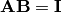 donde
es una matrix tal que 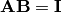 donde  es la llamada matriz identidad que consiste en una matriz en la que los elementos en la diagonal son unos y son ceros en el resto. Normalmente se denota como 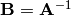 . En Scipy, la inversa de una matriz de un array Numpy se puede calcular haciendo linalg.inv(A), o usando A.I si A es una matriz. Por ejemplo, consideremos
es la llamada matriz identidad que consiste en una matriz en la que los elementos en la diagonal son unos y son ceros en el resto. Normalmente se denota como 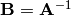 . En Scipy, la inversa de una matriz de un array Numpy se puede calcular haciendo linalg.inv(A), o usando A.I si A es una matriz. Por ejemplo, consideremos
![\mathbf{A=}
\left[
\begin{array}{ccc}
1 & 3 & 5\\
2 & 5 & 1\\
2 & 3 & 8
\end{array}
\right]](_images/math/ef7340860081ac769d781876f7f7ee541fbd46a6.png)
entonces:
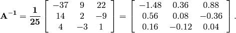
este cálculo lo haríamos con Scipy de la siguiente manera:
>>> A = mat([[1, 3, 5], [2, 5, 1], [2, 3, 8]])
>>> A
matrix([[1, 3, 5],
[2, 5, 1],
[2, 3, 8]])
>>> A.I
matrix([[-1.48, 0.36, 0.88],
[ 0.56, 0.08, -0.36],
[ 0.16, -0.12, 0.04]])
>>> from scipy import linalg
>>> linalg.inv(A)
array([[-1.48, 0.36, 0.88],
[ 0.56, 0.08, -0.36],
[ 0.16, -0.12, 0.04]])
Resolución de sistemas de ecuaciones lineales¶
Con Scipy es muy fácil resolver un sistema de ecuaciones empleando el comando linalg.solve. Este comando tiene como parámetros de entrada la matriz y el vector de términos independientes. Si la matriz es simétrica el proceso de cálculo se puede acelerar si se indica como parámetro. Supongamos que queremos resolver el siguiente sistema de ecuaciones:
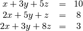
Podemos encontrar la solución usando la matriz inversa:
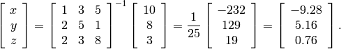
Sin embargo, es mejor usar el comando linalg.solve ya que es más rápido y numéricamente más estable, aunque en este caso el resultado es el mismo:
>>> A = mat('[1 3 5; 2 5 1; 2 3 8]') # Las filas se separan con ";"
>>> b = mat('[10;8;3]')
>>> A.I*b # Usando la matriz inversa
matrix([[-9.28],
[ 5.16],
[ 0.76]])
>>> linalg.solve(A,b) # Usando la funcion ``linalg.solve(A,b)``
array([[-9.28],
[ 5.16],
[ 0.76]])
Cálculo del determinante¶
Supongamos que 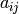 son los elementos de la matriz y 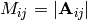 será el determinante de la matriz que se obtiene elimiando la i-esima fila y la j-esima columna de . Entonces para cualquier fila i:
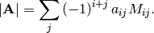
Con Scipy el determinante se puede calcular con linalg.det. Por ejemplo, el determinante de la matriz A
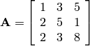
es
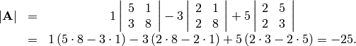
Con Scipy se calcula tan fácilmente como:
>>> A = mat([[1, 3, 5], [2, 5, 1], [2, 3, 8]])
>>> linalg.det(A)
-25.000000000000004
Ejercicios¶
Calcular numéricamente las siguientes integrales
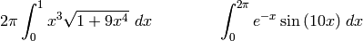
Calcular numéricamente el área más pequeña comprendida entre un círculo 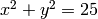 y la recta x=3.
Escribir un programa en el que dibujen la función 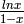 en el intervalo [0,5]. Calcular el área bajo de la figura formada por los ejes OX, OY y esta curva en el intervalo [0,1]. Su resultado exacto es 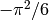. Calcular los errores absoluto y relativo con el que se ha obtenido el resultado, dando sólo las cifras significativas.
Crear una función que calcule numéricamente la siguiente integral admitiendo parámetros de entrada m y n:
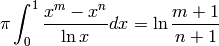
Resolver el sistema AX=B donde:
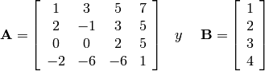